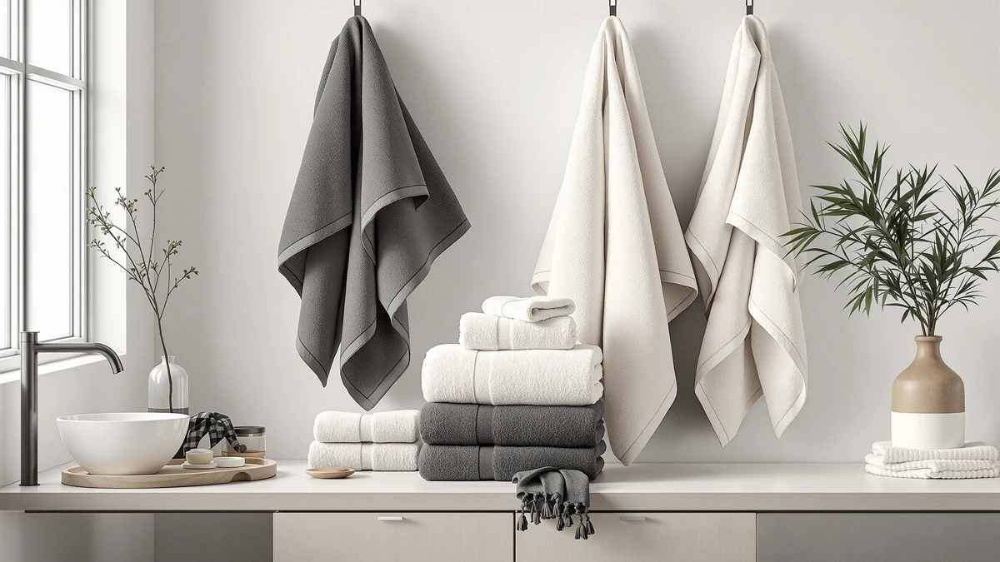

8 Piece Black and Review (2026): Worth It?
Prices and picks verified as of October 2026. Independent, reader-supported reviews.


Quick Answer
This 8 piece black and review comparison points to the Jacquotha 8 Piece Black and Ivory set as the strongest overall pick at $57.99, pairing 100% cotton construction with a color combination that hides daily wear better than an all-white set. If you want a cheaper Egyptian cotton alternative with fewer pieces, the Superior 6-Piece set at $55.69 is worth a look.
Our pick: 8 Piece Black and Ivory — $57.99 Check Price on Amazon
Bottom line: our top pick is the 8 Piece Black and Ivory Towel Set at $52.29.
Things to Know Before You Buy
- Price per piece matters more than the sticker price: at $57.99 for eight pieces, the Jacquotha set runs about $7.25 per towel, cheaper per piece than the six-piece Superior Egyptian cotton set at $55.69.
- Dark colorways like black show lint and water spots differently than white sets, so the appeal of an 8 piece black and ivory combination comes down to easier stain-hiding rather than better absorbency.
- All four sets compared here are cotton or Egyptian cotton, so most of the quality difference between them comes from weave density and finishing rather than fiber type alone.
- LANE LINEN sells two separate sets in this price range, so if you land here after an 8 piece black and review search it helps to check which LANE LINEN listing you're actually comparing.
Search for "8 piece black and review" long enough and you'll land on a handful of near-identical listings, each claiming the same thick, hotel-quality feel. We compared the Jacquotha 8 Piece Black and Ivory set against three similarly priced alternatives from LANE LINEN and Superior to see which one actually earns its price tag. At $57.99, the Jacquotha set sits in the middle of that price range, and its black and ivory pairing is the main reason it stands out from the all-white sets that dominate most towel aisles.
Eight-piece sets exist for a reason: they cover two bathrooms, or one bathroom with regular guests, without forcing a laundry run every other day. The tradeoff is usually fiber quality, since bundling more pieces at a lower price point can mean thinner cotton. The comparison below covers the Jacquotha set and its three closest competitors on price per piece, material, and what verified owners say about long-term durability. None of the four sets here come from a luxury textile brand. The real test is whether each one holds its color and shape through a normal wash cycle without costing more than it should.
Why You Should Trust Us
Ilane Tall researches home and bath products for Best Bath Towels, comparing specs, pricing, and verified buyer feedback across the towel category rather than relying on manufacturer marketing copy. For this 8 piece black and review comparison, we pulled listed materials, piece counts, and prices directly from each product page, then cross-checked owner reviews for recurring complaints about shrinkage, color fading, and shedding. We do not run a fake testing lab, and we don't claim to have unboxed every set on this page. Instead, we offer a side-by-side read of what's actually documented about each product, along with what verified buyers report after living with them, so you can judge value without wading through four separate Amazon listings yourself.
Our Research Process
Our research process for this 8 piece black and review starts with the manufacturer-listed specs: material, piece count, and price, which we treat as a baseline rather than the final word. From there, we read through verified owner reviews on each listing, looking for patterns rather than single complaints. One review mentioning shrinkage after a single wash is noise. A dozen reviews flagging the same issue is a signal worth including here. We also calculate price per piece across all four sets, since a lower sticker price can hide a worse per-towel cost once you account for how many pieces actually ship in the box, and we note when a listing leaves out a spec, like weight or GSM, that would otherwise help with comparison. Where a brand publishes a certification, such as OEKO-TEX, we check whether it applies to the specific set in question rather than assuming it carries over from a related product line.
Overview & Specs

8 Piece Black and Ivory
What we like
- 100% cotton construction at a reasonable $7.25 per piece across the eight-piece set
- Black and ivory pairing hides lint and water spots better than an all-white set
- Eight pieces cover a full bathroom rotation without daily laundry
Flaws but not dealbreakers
- The listing doesn't publish a GSM or weight figure, so you can't verify plushness against competitors before buying
- Reviewers note the ivory half of the pairing shows stains faster than the black half, narrowing the color's stain-hiding advantage to half the set
| Material | 100% cotton |
| Size | Medium |
The Jacquotha 8 Piece Black and Ivory set is built around a simple pitch: two colors that split the difference between a towel that hides stains and one that still looks clean in photos. At $57.99 for eight pieces, it works out to roughly $7.25 per towel, a reasonable rate for a 100% cotton set in the Medium size tier. That price per piece undercuts the Superior Egyptian Cotton 6-Piece Towel, which runs closer to $9.28 per piece despite using a more premium cotton grade.
Owners who buy color-blocked sets like this one are usually making a tradeoff on purpose. Black hides the gray tint that develops on white towels after months of hard water and regular washing, but reviewers consistently note that the lighter ivory pieces in two-tone sets show spots faster than the darker half. If you split the set by bathroom, routing the black towels to the bathroom with heavier daily use and the ivory pieces to a guest bathroom gets more mileage out of both colors, which is a workaround several buyers mention in their reviews rather than a feature the listing advertises. The Medium size noted on the spec sheet puts this set in line with standard bath towel dimensions rather than the larger bath sheet category, so buyers expecting an oversized towel should confirm sizing before adding eight pieces to their cart.
What We Liked
The strongest case for the Jacquotha set is its price per piece. At $7.25 per towel, it undercuts every other cotton set in this 8 piece black and review comparison except the cheapest LANE LINEN option, and it does so while staying at 100% cotton rather than a cotton blend. Owners treat the color pairing as a practical choice: black towels in a household bathroom show far less visible wear between washes than white ones do. For buyers replacing a worn-out set on a budget, that combination of fiber quality and low per-piece cost is hard to beat in this price bracket.
What Could Be Better
Across this 8 piece black and review comparison, the biggest knock against the Jacquotha set is a missing spec sheet: the listing doesn't publish a weight or GSM figure, which makes it harder to compare plushness against sets that do list it, like some Superior Egyptian cotton lines. Reviewers also flag that the ivory half of the set shows stains and water spots sooner than the black half, so the color advantage this set is built around only fully applies to half the pieces in the box. Neither issue is severe enough to rule the set out, but both are worth weighing against the $57.99 price before buying eight pieces at once instead of trying a single towel first. A buyer who wants matched, uniform color across every piece in a set will also find the two-tone split works against that goal by design, since half the pieces are a different shade than the other half.
Who Is It For?
If you're running your own 8 piece black and review comparison before buying, this set makes the most sense for a household bathroom with daily traffic, where a dark towel color buys a few extra washes before stains become visible. It also suits buyers who want a full eight-piece rotation without paying Egyptian cotton prices. It's a weaker fit for anyone who wants matching all-white towels for a guest bathroom, or for buyers who want a documented weight figure before committing to a set this size. Renters and first-apartment buyers furnishing a bathroom from scratch also fit the profile well, since eight pieces at $57.99 cover both daily towels and a backup set without a second purchase.
Alternatives to Consider
If the color pairing or piece count here doesn't match what you need, three alternatives come up often in the same 8 piece black and review searches. Each trades something different: more pieces, a different cotton grade, or a different price point.

Editor's Pick
LANE LINEN Bath Towel Set
LANE LINEN's set costs $2 more than the Jacquotha pick at $59.99, and reviewers describe it as a safe, all-around cotton set for buyers who'd rather skip the two-tone color decision entirely and keep every piece matching.
$59.99
Check Price on Amazon
Best Value
Superior Egyptian Cotton 6-Piece Towel
At $55.69 for six pieces, Superior's Egyptian cotton set costs about $9.28 per towel, more per piece than the Jacquotha set, but Egyptian cotton's longer fibers are the reason owners cite for choosing it over a standard cotton blend.
$55.69
Check Price on Amazon
Premium Choice
LANE LINEN 100% Cotton Bath
LANE LINEN's 100% Cotton Bath set sticks to a single straightforward material story at $54.99, with no color-blocking or piece-count tradeoffs to think through, which makes it the simplest pick of the three alternatives here.
$54.99
Check Price on AmazonWhat does the Jacquotha 8-piece set actually include?
The listing describes it as an eight-piece set in black and ivory, which is where most 8 piece black and review searches start.
Does the black half of the set fade or shed lint over time?
Reviewers report that dark cotton towels like these can shed visible lint during the first few washes, which is common with new cotton regardless of color and usually settles after two or three wash cycles.
Frequently Asked Questions
What does the Jacquotha 8-piece set actually include?
Does the black half of the set fade or shed lint over time?
Is this set better value than the Superior Egyptian Cotton 6-Piece Towel?
Final Verdict
Taken together, this 8 piece black and review comparison comes down to Jacquotha for most buyers. The 8 Piece Black and Ivory set from Jacquotha costs the least per piece of any 100% cotton option here, and its two-tone color does real work hiding everyday wear instead of only looking different in a product photo. Buyers who want Egyptian cotton's longer fibers, or who'd rather skip the color-blocking tradeoff entirely, have reasonable alternatives in the LANE LINEN and Superior sets above. For a household bathroom that sees daily use, the Jacquotha set is the one worth adding to your cart at $57.99. Readers who searched for 8 piece black and review results specifically for the color pairing, rather than piece count or price, should still end up at the same conclusion: Jacquotha's black and ivory combination is the most deliberate execution of that idea among the four sets covered here.